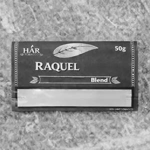

Trade Mark Journal No.2026/010 6 March 2026
UK00004341270 16 February 2026 (34)

- Class 34
- Tobacco; Cigarette tobacco; Tobacco and tobacco substitutes; Smoking tobacco; Snus with tobacco; Mentholated tobacco; Hookah tobacco; Shisha tobacco; Hand-rolling tobacco; Roll-your-own tobacco; Chewing tobacco; Snuff with tobacco; Flavored tobacco; Flavourings for tobacco; Pipe tobacco; Leaf tobacco; Tobacco spittoons; Tobacco tins; Tobacco products; Tobacco pipes; Pipes (Tobacco -); Pipes for smoking mentholated tobacco substitutes; Snus without tobacco; Tobacco powder; Pouches for tobacco; Tobacco pouches; Pouches (Tobacco -); Tobacco jars; Tobacco and tobacco products (including substitutes); Manufactured tobacco; Tobacco substitutes; Tobacco cases; Raw tobacco; Tobacco filters; Rolling tobacco; Tobacco substitute; Articles for use with tobacco; Cigarettes containing tobacco substitutes; Menthol cigarettes; Tobacco containers and humidors; Tobacco pipe cleaners; Snuff without tobacco; Tobacco pipe scrapers; Tobacco free cigarettes, other than for medical purposes; Tobacco storage tins; Cigarettes; Filters for tobacco products; Tobacco free oral nicotine pouches [not for medical use]; Tobacco, whether manufactured or unmanufactured; Tobacco, raw or manufactured; Pipe cleaners for tobacco pipes; Absorbent paper for tobacco; Loose, rolling and pipe tobacco; Absorbent paper for tobacco pipes; Nicotine pouches for use as a tobacco substitute, not for medical purposes; Mouthpieces for cigarettes; Cigarette packets; Snus; Cigarette lighters; Smokers (Lighters for -); Smoking pipe cleaners; Cigarette paper; Cigarette cases; Cases (Cigarette -).
Harish Ramesh
Representative: Gerard Meegan